قدمبهقدم، با تصویر و توضیح — بدون ترمینال، بدون نصب Node.js، بدون دیتابیس
کنسول جستجوی فارسی یک داشبورد کامل برای مدیریت و تحلیل دادههای Google Search Console است — به زبان فارسی، با نمودارهای تعاملی، اعداد فارسی، تاریخ شمسی و راهنمای ساده برای مبتدیها. تمام ۱۰ بخش اصلی سرچ کنسول (عملکرد جستجو، بازرسی URL، ایندکسگذاری، موبایل، سایتمپ، امنیت، نتایج غنی، لینکها، Core Web Vitals و حذفهای موقت) در آن پوشش داده شده است.
نسخهای که با این راهنما نصب میکنید، نسخه استاتیک cPanel است: کل برنامه بهصورت فایلهای HTML/JS/CSS خالص تبدیل شده و مستقیماً داخل مرورگر شما اجرا میشود. یعنی هاست شما فقط فایلها را مثل یک سایت معمولی سرو میکند — نه به Node.js نیاز دارد، نه به دیتابیس، نه به هیچ نصب اضافهای. همین حالت، سریعترین و کمدردسرترین راه اجرا روی هاست اشتراکی است.
فلسفه این نسخه: برنامه کاملاً سمت مرورگر (Client-Side) اجرا میشود. در «حالت نمایشی» همه امکانات با داده نمونه فارسی بدون هیچ اتصالی کار میکند. برای دیدن داده واقعی سایت خودتان، در بخش ۹ همین راهنما حساب گوگل خود را متصل میکنید — بدون اینکه هاست شما هیچ نقشی در آن داشته باشد.
میبینید؟ نه ترمینال لازم است، نه نصب پکیج، نه تنظیم دیتابیس. اگر جزئیات هر قدم را میخواهید (با تصویر)، از بخش بعدی ادامه دهید. اگر سایت فعالی روی دامنه اصلی دارید، قبل از آپلود ابتدا بخش ۷ (سابدامنه) را بخوانید تا فایلهای سایت فعلیتان با فایلهای داشبورد قاطی نشوند.
فایل نصب به نام Persian-Search-Console-cPanel-v1.1.0.zip در صفحه Releases مخزن رسمی گیتهاب قرار دارد. این فایل شامل کل برنامه (فایلهای HTML/JS/CSS ساختهشده + فایل .htaccess بهینهشده + راهنمای متنی سریع) است و حجم آن فقط حدود ۷۰۰ کیلوبایت است.
github.com/pranses2011/Persian-Search-Console/releasesPersian-Search-Console-cPanel-v1.1.0.zip کلیک کنید تا دانلود شود.امنیت: فقط فایل ZIP از ریلیز رسمی را نصب کنید. این مخزن عمومی و کد آن کاملاً باز (Open Source) است و میتوانید خودتان آن را بازبینی کنید. هیچ دادهای از این برنامه به جایی ارسال نمیشود مگر خودتان به حساب گوگلتان وصل شوید.
cPanel همان پنل مدیریتی است که هاستینگ به شما داده. برای ورود، در مرورگر آدرس هاست خود را همراه با پورت ۲۰۸۳ باز کنید: https://example.com:2083 — یا از دکمه «ورود به cPanel» در پنل کاربری سایت هاستینگ استفاده کنید. نام کاربری و رمز عبور معمولاً در ایمیل خوشآمدگویی هاستینگ ارسال شده است.
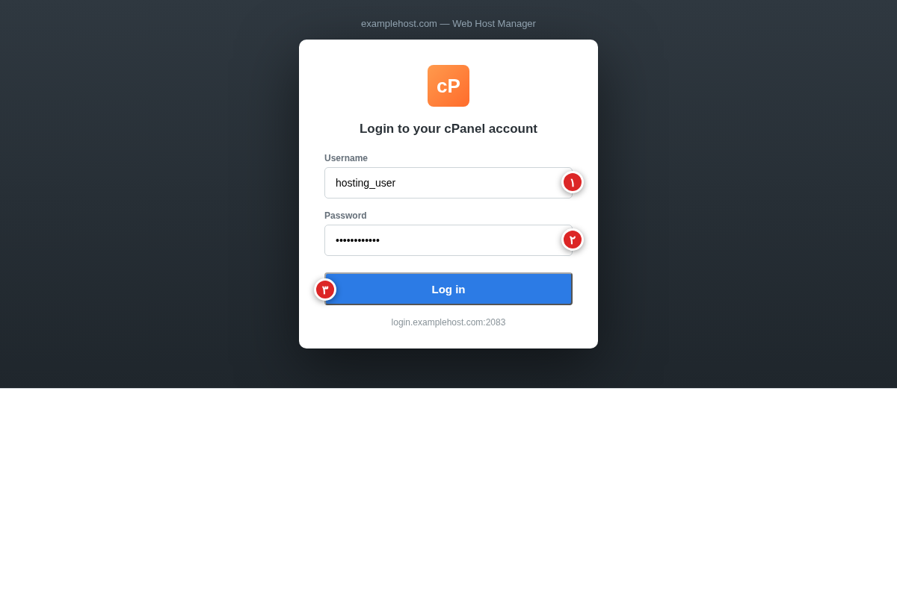
hosting_user — دقیقاً همان که هاستینگ داده).اگر بعد از چند تلاش ورود ناموفق بود، بعضی هاستها بعد از ۵ خطا IP شما را موقتاً بلاک میکنند (محدودیت cPHulk). صبر کنید یا از پشتیبانی هاست بخواهید بلاک را بردارد.
بعد از ورود، صفحه اصلی cPanel را میبینید که پر از آیکونهای مختلف است. ما فقط به File Manager نیاز داریم — ابزار آپلود و مدیریت فایل. سریعترین راه پیدا کردن آن، استفاده از کادر جستجوی بالای صفحه است.
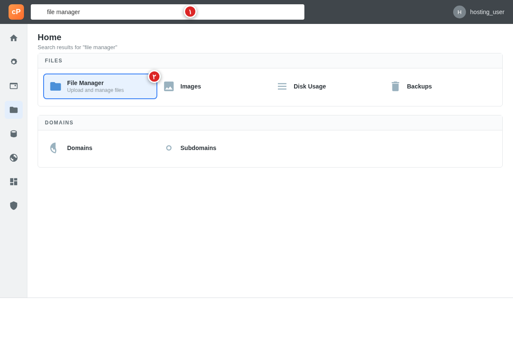
file manager را تایپ کنید.File Manager در یک تب جدید باز میشود و شما را در پوشه خانگی (/home/username) قرار میدهد. محل نصب داشبورد باید پوشه public_html باشد — همان پوشهای که ریشه سایت شماست.
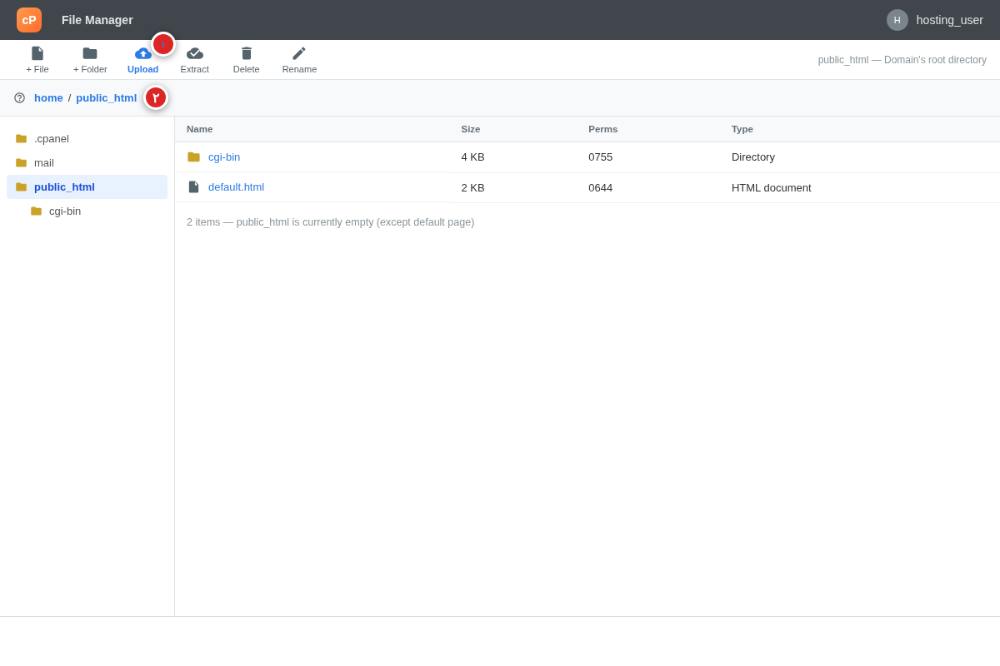
اگر در حال حاضر فایلهایی مثل index.html یا wp-config.php (سایت وردپرسی) در public_html دارید، یعنی سایت فعلی روی این دامنه فعال است. در این صورت ابتدا بخش ۹ — نصب روی سابدامنه را انجام دهید تا فایلهای سایتتان بازنویسی نشود، بعد به همینجا برگردید. اگر public_html خالی است (یا فقط default.html دارد)، خیالتان راحت ادامه دهید.
روی دکمه Upload در نوار ابزار File Manager کلیک کنید. صفحه آپلود باز میشود که هم قابلیت کشیدنورهاکردن (Drag & Drop) دارد و هم دکمه انتخاب فایل.
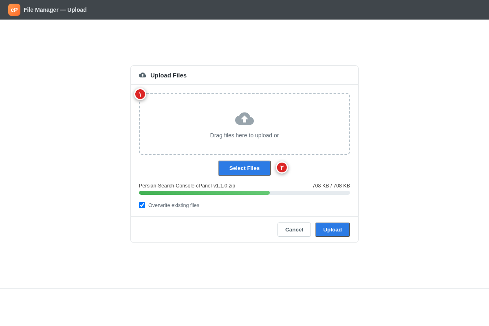
Persian-Search-Console-cPanel-v1.1.0.zip را از کامپیوترتان انتخاب کنید.آپلود شروع میشود و نوار پیشرفت سبز رنگ پر میشود. حجم فایل کم است (حدود ۷۰۰ کیلوبایت)، پس حتی با اینترنت معمولی چند ثانیه بیشتر طول نمیکشد:
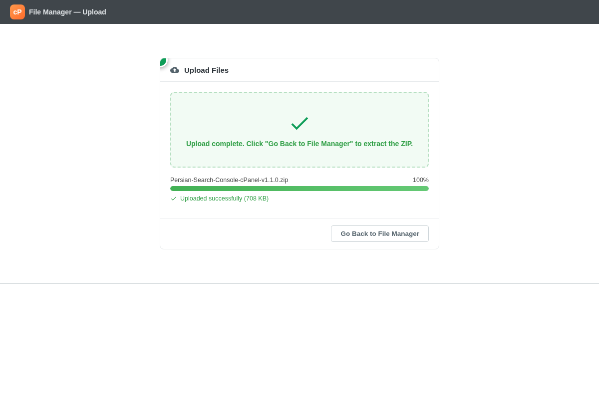
وقتی پیام Upload complete با تیک سبز ظاهر شد، روی دکمه Go Back to File Manager کلیک کنید تا به لیست فایلها برگردید. حالا فایل ZIP باید در پوشه public_html قابل مشاهده باشد.
اگر هنگام آپلود خطای «The file exceeds the upload_max_filesize» دیدید (در بعضی هاستها سقف آپلود پایین است)، نگران نباشد: تیک Overwrite existing files را بزنید و مجدد تلاش کنید، یا از پشتیبانی بخواهید سقف آپلود را بالا ببرد. فایل ما فقط ۷۰۰ کیلوبایت است و تقریباً هیچ هاستی با آن مشکلی ندارد.
فایل ZIP آپلودشده باید باز (استخراج) شود تا فایلهای واقعی برنامه آزاد شوند. روی نام فایل ZIP در لیست، راستکلیک کنید:
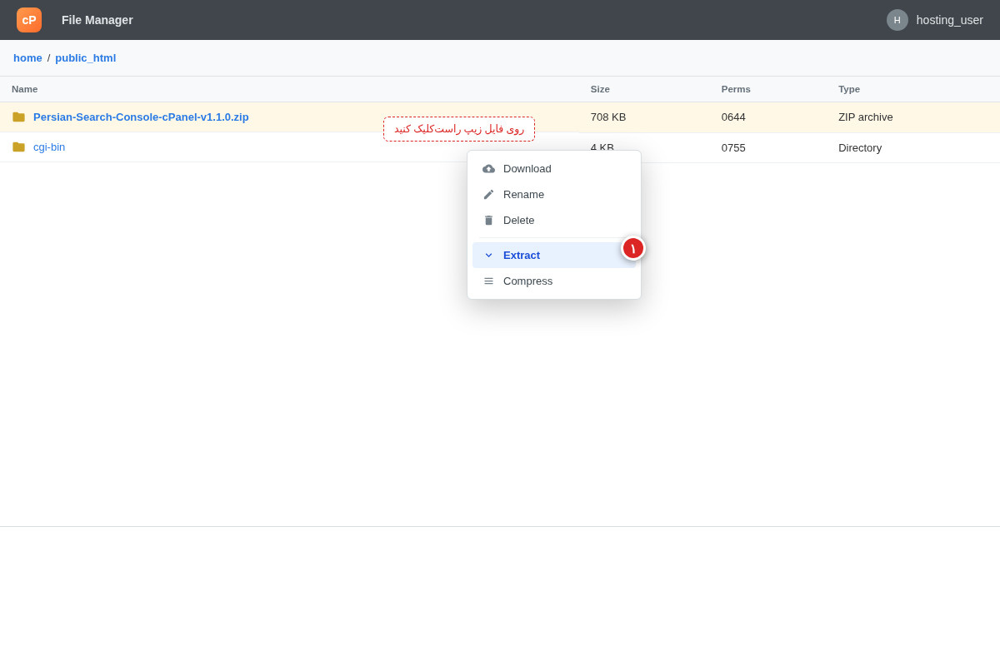
Persian-Search-Console-cPanel-v1.1.0.zip راستکلیک کنید (در بعضی مرورگرها کلیک با نگهداشتن دکمه راست موس).پنجره استخراج باز میشود و مسیر پیشفرض همان پوشه فعلی (public_html) است — چیزی تغییر ندهید و تأیید بزنید:
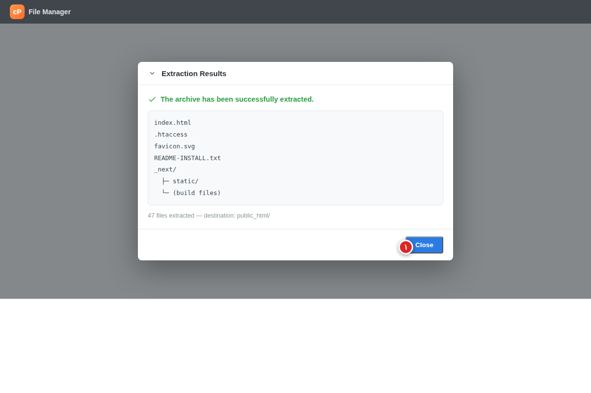
حالا لیست فایلهای public_html باید دقیقاً مثل تصویر زیر باشد — فایل اصلی index.html، پوشه _next (فایلهای برنامه)، فایل .htaccess (بهینهسازی سرعت) و چند فایل دیگر:
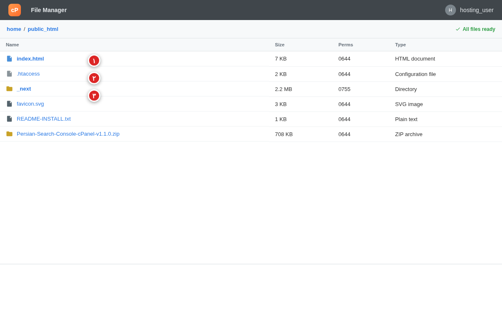
اختیاری: بعد از استخراج موفق، میتوانید فایل ZIP را حذف کنید (راستکلیک → Delete) تا فضای هاشت آزاد شود. فایل default.html قدیمی هاست هم اگر هنوز موجود بود حذفش کنید.
در مرورگر، آدرس دامنه خود را باز کنید: https://example.com. صفحه ورود «کنسول جستجوی فارسی» باید ظاهر شود — دقیقاً مثل این:
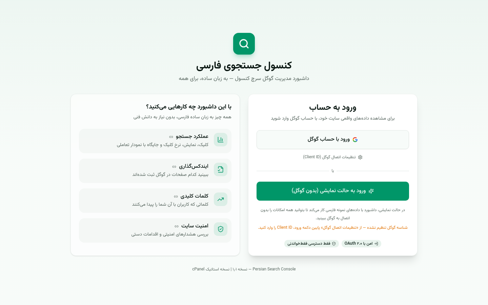
از این لحظه، برنامه بهطور کامل روی هاست شما اجرا میشود. دو راه ورود دارید:
با کلیک روی «ورود به حالت نمایشی»، لیست ۵ سایت نمونه ظاهر میشود و با انتخاب هرکدام، وارد داشبورد ۱۰ بخشی میشوید:
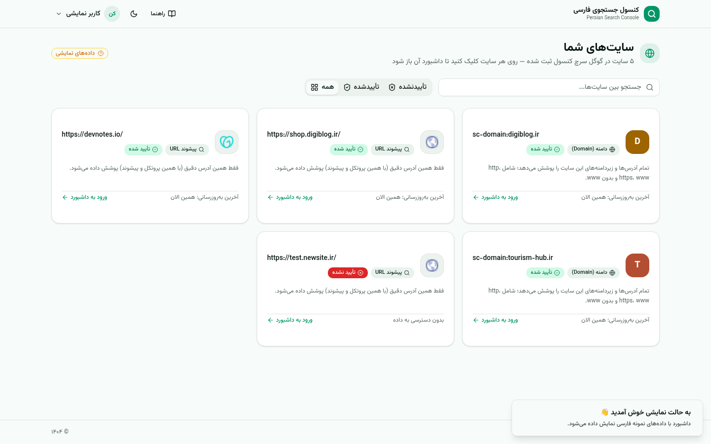
تبریک! نصب کامل شد. اگر صفحه ورود را میبینید، دیگر کار دیگری با هاست ندارید. ادامه راهنما دو چیز را پوشش میدهد: نصب روی سابدامنه (اگر سایت فعلی دارید)، فعالسازی SSL و اتصال داده واقعی گوگل — و بعد از آن، تور کامل استفاده از داشبورد.
صفحه سفید یا خطا دیدید؟ به بخش عیبیابی (۱۱) بروید — تمام خطاهای رایج (صفحه سفید، ۴۰۳، فونت ناجور، خطای گوگل) آنجا با راهحل آمده است.
اگر روی دامنه اصلیتان سایت فعلی دارید (وردپرس، فروشگاه و...)، بهجای public_html ریشه، یک سابدامنه جدید بسازید و داشبورد را آنجا نصب کنید. نتیجه: داشبورد شما روی آدرسی مثل search.example.com اجرا میشود و سایت اصلیتان دستنخورده میماند. این کار کاملاً رایگان است و هیچ تنظیم اضافهای نمیخواهد.
در cPanel عبارت subdomains را در کادر جستجو تایپ کنید و روی نتیجه کلیک کنید:
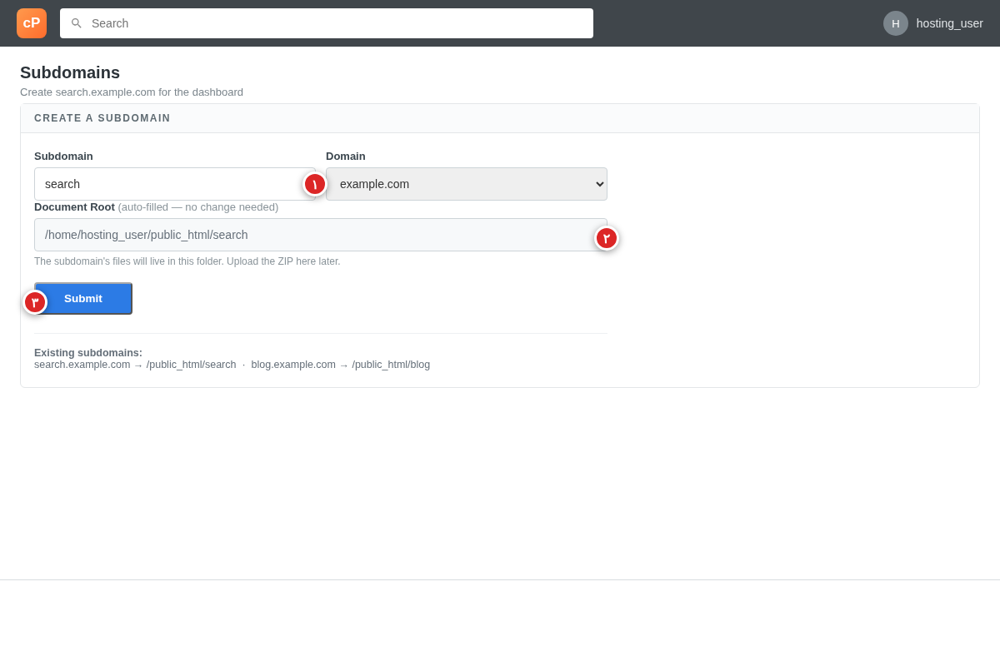
search)./public_html/search) — چیزی تغییرش ندهید.سپس دقیقاً همان قدمهای ۳ تا ۶ را انجام دهید، با این تفاوت که در File Manager بهجای public_html، وارد پوشه public_html/search شوید و ZIP را همانجا آپلود و Extract کنید. بعد از آن داشبورد روی https://search.example.com در دسترس است.
چرا ریشه دامنه؟ فایلهای برنامه با مسیرهای مطلق (شروع از /) ساخته شدهاند، بنابراین داشبورد باید در ریشه یک دامنه یا سابدامنه قرار بگیرد. نصب در زیرپوشهای از سایت موجود (مثل example.com/search) پشتیبانی نمیشود — بهجایش سابدامنه بسازید که همان اثر را دارد.
SSL باعث میشود سایت شما با https:// و قفل سبز باز شود. برای خود داشبورد اجباری نیست، اما اگر میخواهید داده واقعی گوگل را وصل کنید (بخش بعدی)، گوگل فقط آدرسهای https را میپذیرد. خوشبختانه cPanel گواهی رایگان AutoSSL دارد که با یک کلیک فعال میشود.
در cPanel عبارت ssl/tls status را جستجو کنید:
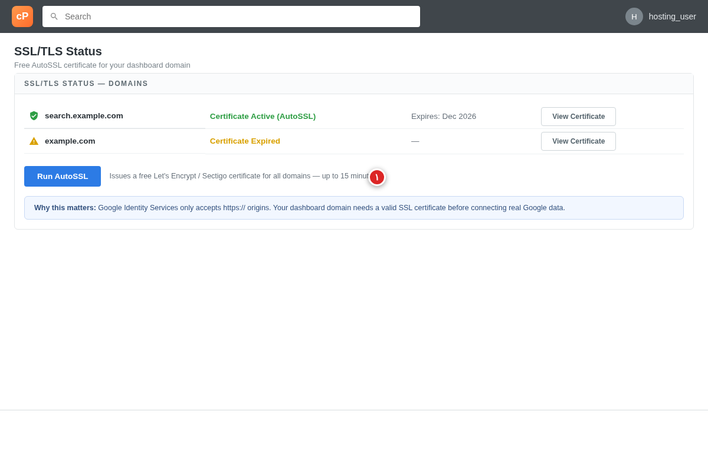
بعد از فعال شدن، در جدول همان صفحه کنار دامنهتان وضعیت Certificate Active را میبینید و سایت با https بدون هیچ خطایی باز میشود. اکثر هاستها AutoSSL را خودکار اجرا میکنند، پس ممکن است از قبل فعال باشد.
اگر بعد از فعال شدن SSL هنوز با http باز میشود، یک بار آدرس را دستی با https باز کنید — خود برنامه و فایل .htaccess همراهش، بازدیدهای بعدی را خودکار به https هدایت نمیکنند تا تداخلی با تنظیمات سایت شما ایجاد نشود.
تا اینجا داشبورد با داده نمایشی کار میکند. برای دیدن داده واقعی سایت خودتان، برنامه مستقیماً از مرورگرِ خودتان به گوگل وصل میشود (Google Identity Services). تنها چیزی که لازم دارید یک OAuth Client ID رایگان از Google Cloud Console است. این بخش کاملاً اختیاری است و میتوانید هر وقت خواستید انجامش دهید.
به console.cloud.google.com بروید و با حساب جیمیل خود وارد شوید. یک پروژه جدید بسازید (منوی بالای صفحه → New Project، اسم دلخواه مثلاً search-console-app). سپس از منوی APIs & Services به بخش Credentials بروید:
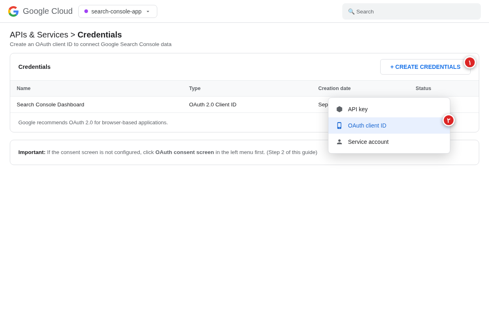
اگر اولین بار است Client ID میسازید، گوگل از شما میخواهد «صفحه رضایت» را تنظیم کنید. این صفحه همان چیزی است که موقع ورود به گوگل خودتان میبینید. فقط چند فیلد ساده است:
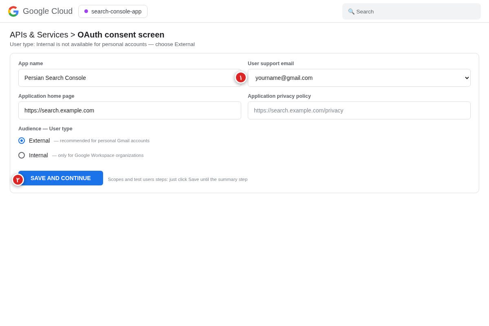
Persian Search Console (هر اسمی).حالا فرم ساخت Client ID را پر کنید. چون برنامه کاملاً داخل مرورگر اجرا میشود، فقط نیاز به «JavaScript origins» داریم — نه Redirect URI:
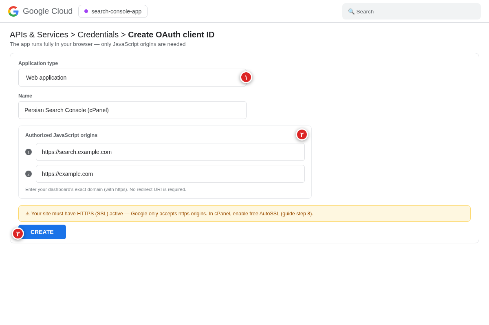
https://search.example.com). دقت کنید: بدون اسلش آخر، بدون www اضافی — دقیقاً همان آدرسی که داشبورد با آن باز میشود.پنجره موفقیت باز میشود و Client ID شما را نشان میدهد — همان رشته طولانی که با عدد شروع میشود و به apps.googleusercontent.com ختم میشود:
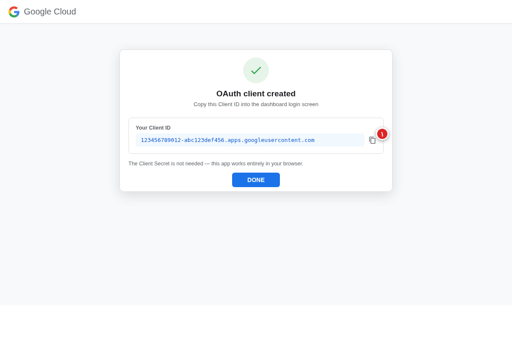
به صفحه ورود داشبورد برگردید (دامنه خودتان). زیر دکمه ورود گوگل، لینک «تنظیمات اتصال گوگل (Client ID)» را بزنید:
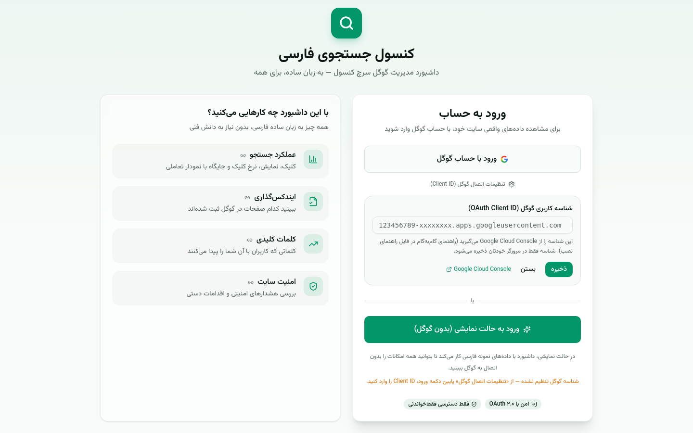
حالا دکمه «ورود با حساب گوگل» را بزنید — پنجره انتخاب حساب گوگل باز میشود، اجازه دسترسی بدهید و وارد داشبورد با داده واقعی سایتهای خودتان میشوید! 🎉
مهم: آدرسی که در JavaScript origins وارد کردید باید دقیقاً با آدرسی که داشبورد را با آن باز میکنید یکی باشد (https و بدون www اضافه). اگر «origin mismatch» خطا دیدید، برگردید به Google Cloud و آدرس درست را اضافه کنید. همچنین دامنه شما باید SSL فعال داشته باشد (بخش ۸).
محدودیتهای API گوگل: بخشهای عملکرد جستجو، سایتمپها، لیست سایتها و بازرسی URL از API رسمی گوگل داده واقعی میگیرند. بعضی گزارشها (مثل جزئیات نتایج غنی و Core Web Vitals) بهخاطر محدودیت API عمومی گوگل، با داده نمایشی تکمیل میشوند و در خود برنامه بهصورت شفاف مشخص شدهاند.
در این بخش، همه امکانات داشبورد را با تصویر واقعی میبینید (تصاویر از نسخه نصبشده همین بسته گرفته شدهاند). داشبورد یک سایدبار ۱۰ بخشی دارد که با کلیک روی هر کدام، بخش مربوطه باز میشود. در هدر هم انتخاب سایت، بازه زمانی، زنگ اعلانها، راهنمای داخلی و دکمه حالت تاریک در دسترس است.
اولین و مهمترین بخش. چهار شاخص کلیدی (کلیک، نمایش، نرخ کلیک، میانگین جایگاه) با مقایسه درصدی نسبت به بازه قبل، نمودار تعاملی ۴ خطی و ۶ جدول ابعاد (کلمات کلیدی، صفحات، کشورها، دستگاهها و...). روی نام هر معیار در راهنمای نمودار کلیک کنید تا خطش روشن/خاموش شود:
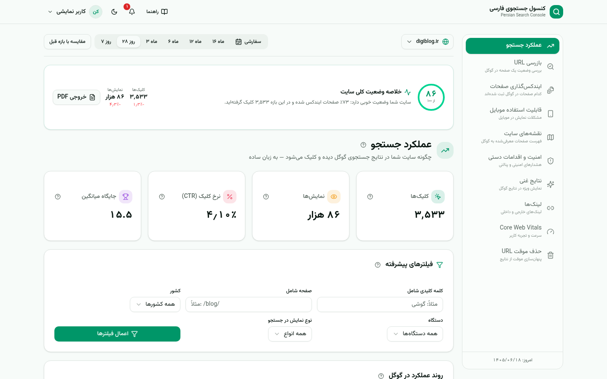
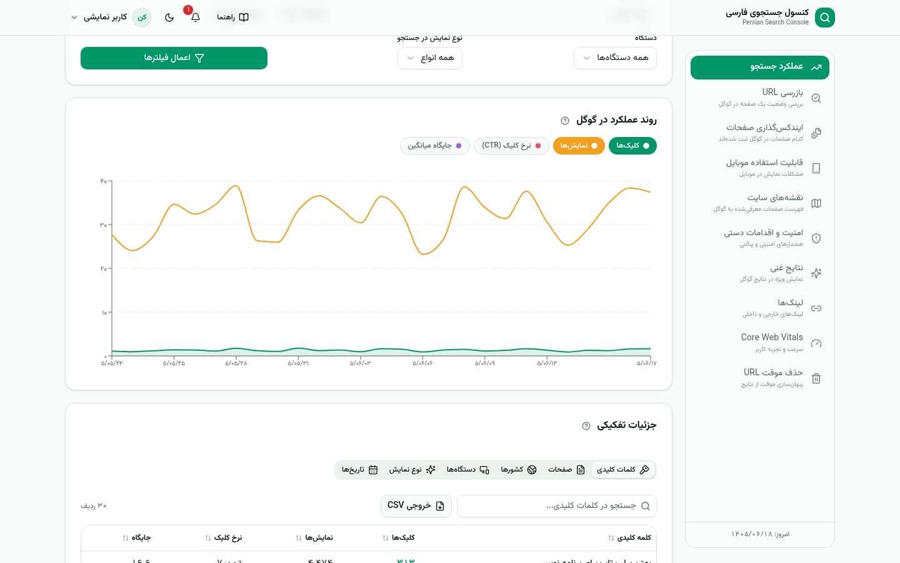
از نوار بالای صفحه، بازه زمانی (۷ روز تا ۱۶ ماه یا سفارشی با تاریخ شمسی) و کلید مقایسه با بازه قبل را عوض کنید. از دکمه CSV بالای هر جدول، خروجی اکسل سازگار با فارسی بگیرید.
آدرس هر صفحهای از سایت خود را وارد کنید تا وضعیتش در گوگل را ببینید: ایندکس شده یا نه، آخرین خزش چه زمانی، مشکلات موبایل و نتایج غنی — همه با راهنمای رفع مشکل:
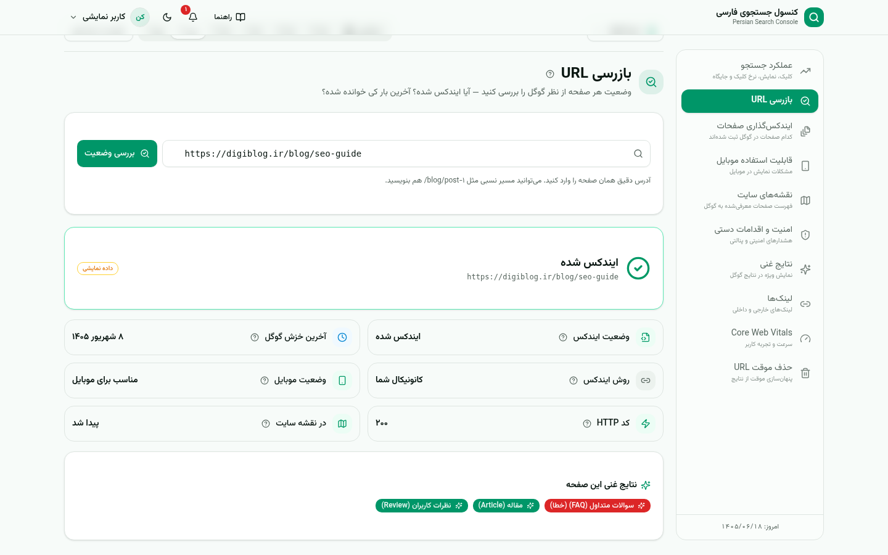
گزارش Coverage: چند صفحه در گوگل ثبت شده، چند صفحه مستثنا شده و چرا. نمودار دایرهای وضعیت، روند ۱۲ ماهه و آکاردئون ۹ دسته خطا با راهنمای رفع:
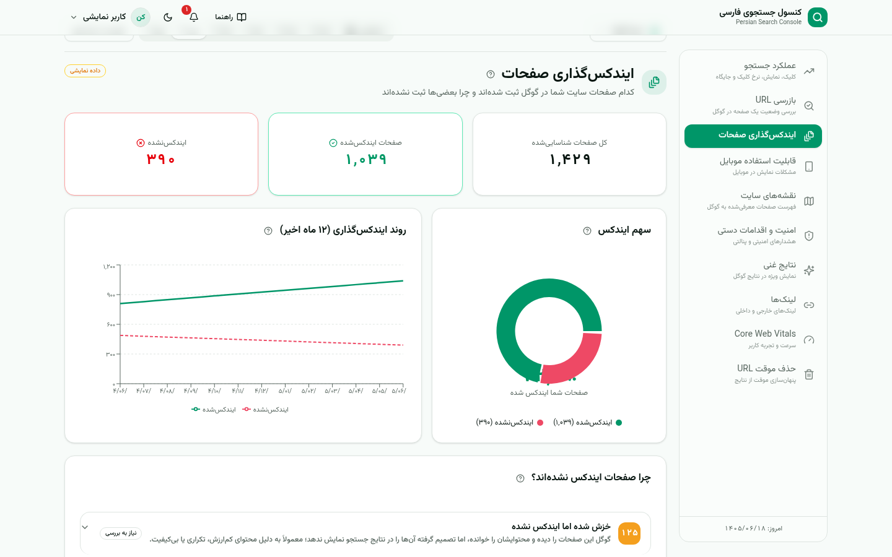
مشکلات نمایش سایت در موبایل (متن کوچک، عناصر نزدیک، محتوای عریض...) هرکدام با تعداد صفحات مشکلدار، نمونه URL و راهحل گامبهگام:
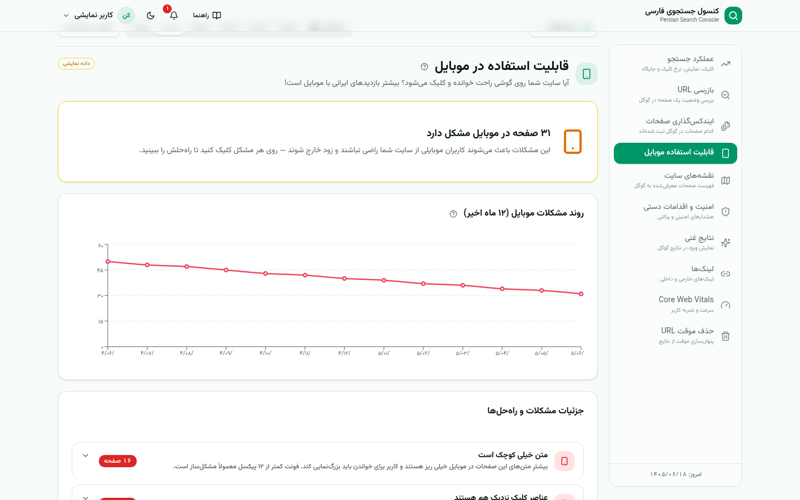
لیست سایتمپهای ارسالشده با وضعیت و تعداد URLها. در حالت دمو/هاست میتوانید سایتمپ جدید بفرستید یا حذف کنید (در حالت واقعی، مستقیم به API گوگل ارسال میشود):
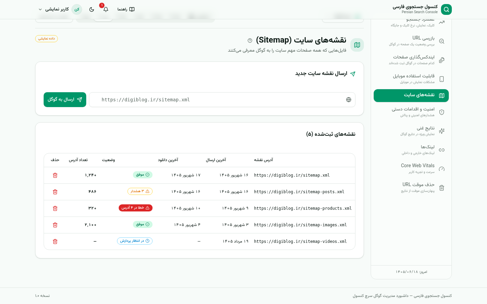
هشدارهای امنیتی (بدافزار، فیشینگ، لینکهای غیرطبیعی) و اقدامات دستی گوگل، با وضعیت کلی و راهنمای درخواست بازبینی:
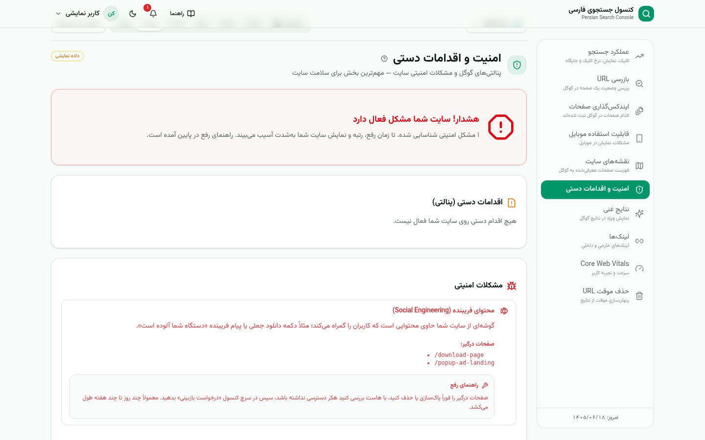
۹ نوع نتیجه غنی (FAQ، مقاله، محصول، مسیر، ویدیو و...) با سهم معتبر/هشدار/خطا، نمودار روند و لیست صفحات مشکلدار:
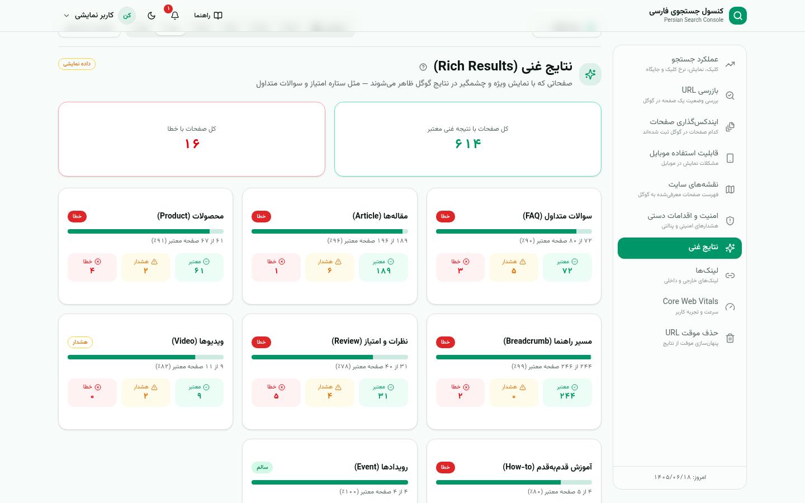
سایتهای لینکدهنده به شما، متنهای انکر و لینکهای داخلی، با نمودارهای میلهای و جدولهای قابل خروجی:
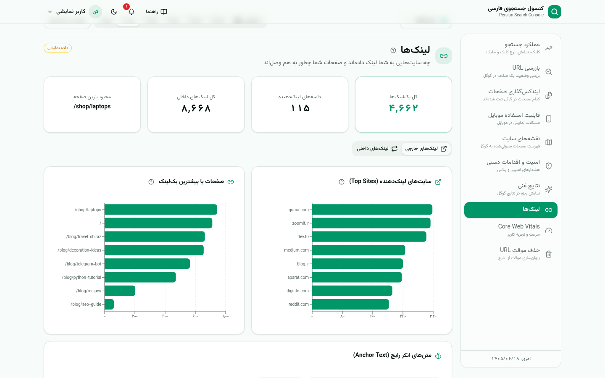
سه معیار سرعت واقعی کاربران (LCP، INP، CLS) با آستانههای رسمی گوگل، تفکیک موبایل/دسکتاپ و توزیع سهگانه خوب/نیازمند بهبود/ضعیف:
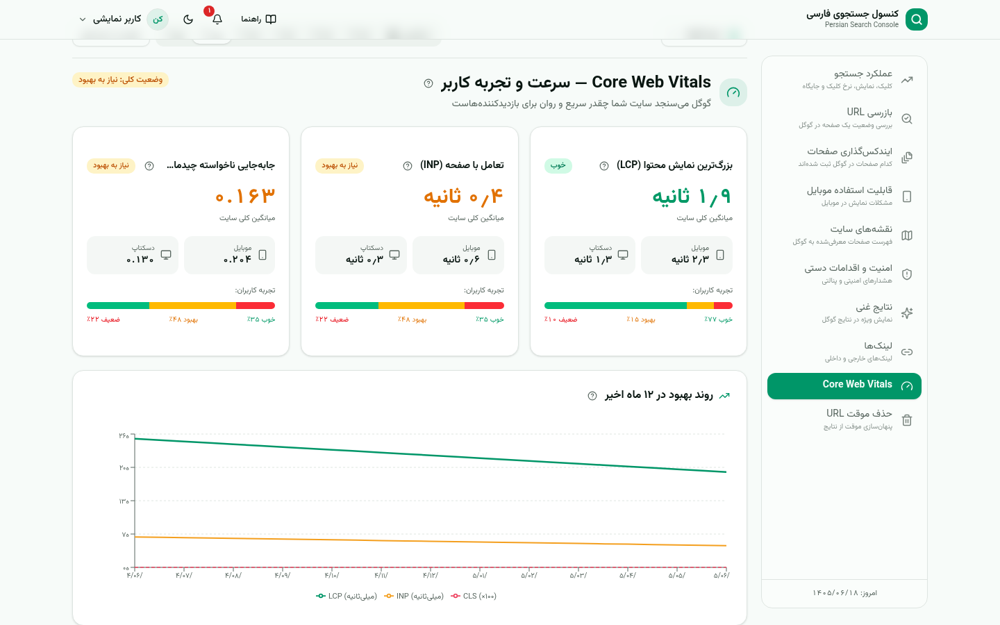
درخواست حذف موقت URL از نتایج گوگل (برای صفحاتی که حذف کردهاید)، با جدول وضعیت و امکان لغو:
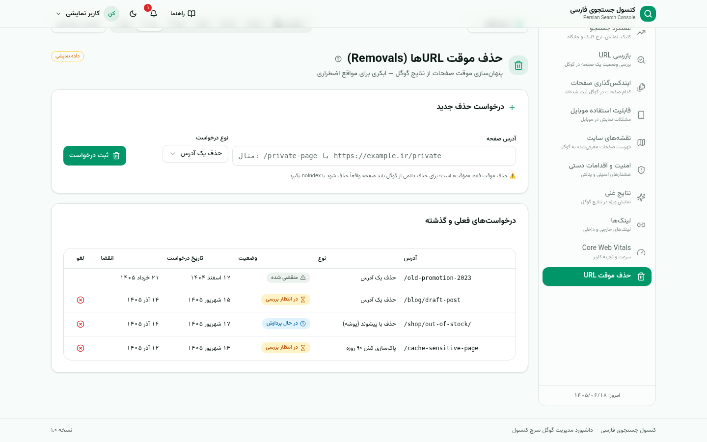
زنگ بالای صفحه، رخدادهای مهم (افت کلیک، رشد، مشکلات ایندکس، یادآوری امنیت) را با آیکون شدت نشان میدهد. کارت «خلاصه سلامت سایت» هم امتیاز ۰ تا ۱۰۰ سایت را با نکات ساده دارد و دکمه خروجی PDF گزارش قابل چاپ میسازد:
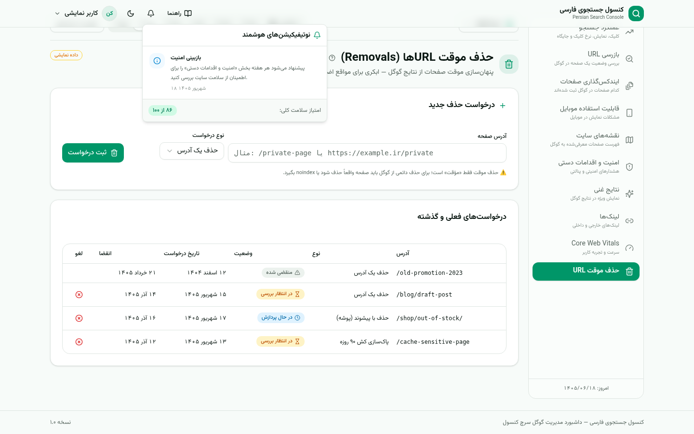
دکمه «راهنما» در هدر، دیالوگ آموزشی ۱۱ تبی را باز میکند که هر بخش داشبورد را به زبان ساده با مثال روزمره توضیح میدهد — برای مبتدیها عالی است:
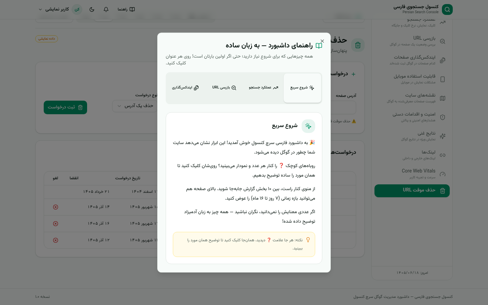
با دکمه ماه در هدر، کل داشبورد به تم تاریک زیبا تبدیل میشود. سایت کاملاً واکنشگراست و روی موبایل هم منوی بخشها بهصورت کشویی در دسترس است:
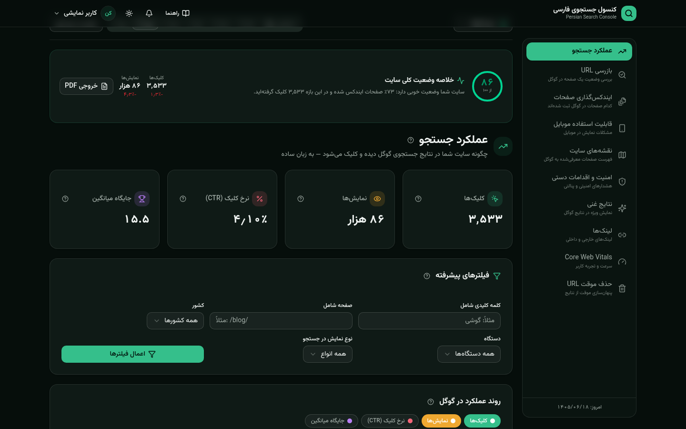
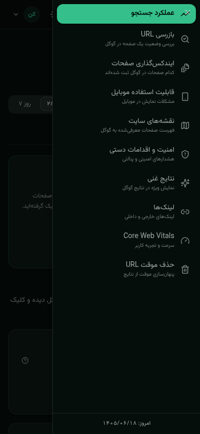
پیشنهاد شروع: بعد از ورود، اول پیامهای زنگ اعلان را بخوانید، بعد خلاصه سلامت سایت را ببینید و در آخر سراغ جدول کلمات کلیدی بروید — پرکاربردترین جدول برای سئو. هر جا سردرگم شدید، دکمه «راهنما» در هدر همه چیز را ساده توضیح میدهد.
علت رایج: فایلها در جای درست Extract نشدهاند — یعنی بهجای اینکه index.html مستقیم داخل public_html باشد، در یک زیرپوشه (مثل public_html/Persian-Search-Console-cPanel-v1.1.0) قرار گرفته است. راهحل: در File Manager وارد آن زیرپوشه شوید، همه فایلها را Select All کنید و با Move به public_html منتقل کنید (یا پوشهها را Cut و در ریشه Paste). مطمئن شوید آدرس public_html/index.html واقعاً وجود دارد.
علت: بعضی هاستها دسترسی فایلها را محدود میکنند یا قالب (Theme) هاست شما دسترسی به فایلهای .htaccess را بسته. راهحل: در File Manager روی پوشه _next راستکلیک → Change Permissions و مقدار 755 را بدهید؛ برای index.html مقدار 644. اگر باز هم خطا بود، نام فایل .htaccess را به htaccess.txt تغییر دهید (برنامه بدون آن هم کار میکند، فقط کندتر).
علت: MIME اشتباه فایلهای woff2 روی هاستهای خیلی قدیمی. راهحل: یک بار Ctrl+F5 بزنید (کش کامل). اگر حل نشد، به پشتیبانی هاست بگویید «Please add font/woff2 MIME type». در ۹۹٪ هاستها این مشکل وجود ندارد.
به ترتیب چک کنید: ۱) Client ID کامل کپی شده (شروع با عدد، پایان با apps.googleusercontent.com)؛ ۲) در Google Cloud، بخش Authorized JavaScript origins، آدرس سایت شما دقیقاً با https وارد شده؛ ۳) SSL سایت فعال است (بخش ۸)؛ ۴) پنجرههای popup مرورگر بلاک نیستند. اگر پیام «origin mismatch» دیدید، مربوط به مورد ۲ است.
کش مرورگر است. Ctrl+F5 بزنید یا در حالت خصوصی مرورگر باز کنید. فایلهای JS با نام یکتا (hash) ساخته میشوند، پس بعد از هر بهروزرسانی، خودکار نسخه جدید میآید — فقط همان بار اول کش مرورگر ممکن است مزاحم شود.
ابتدا مطمئن شوید در پوشه درست (public_html) هستید و تیک Overwrite existing files را زدهاید. فایل ما زیر ۱ مگابایت است؛ اگر باز خطای سقف آپلود دادید، از پشتیبانی بخواهید upload_max_filesize را حداقل به ۲ مگابایت برسانند.
طبیعی است — فایل مخفی است. در File Manager دکمه Settings (بالای صفحه) → تیک Show Hidden Files (dotfiles) → Save. حالا فایلهای نقطهدار دیده میشوند.
نسخههای جدید با فایل ZIP جدید در صفحه Releases گیتهاب منتشر میشوند. بهروزرسانی دقیقاً مثل نصب اول است، فقط یک نکته: چون نام فایلها در هر نسخه فرق دارد، اول نسخه قبلی را پاک کنید تا فایلهای قدیمی با جدید قاطی نشوند:
index.html، پوشه _next و فایلهای favicon.svg و logo.svg (فایلهای اختصاصی خودتان را نگه دارید!).تنظیمات شما (Client ID گوگل و وضعیت ورود) در مرورگر خودتان ذخیره شده و با بهروزرسانی هاست از بین نمیرود — نیازی به تنظیم مجدد ندارید.